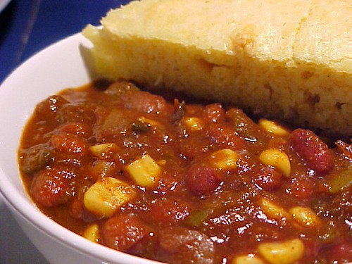

Chili

Photo: serenejournal (CC BY 2.0)
Directions
- Brown meat and onions in large pan. Stir in tomatoes, tomato sauce, liquid from kidney beans and seasonings. Simmer uncovered 45 minutes stirring occasionally. Add (2) beans and corn. Cook 15 minutes more. Tabasco to taste. Add more beans if necessary or needed..
- Brown meat and onions in large pan. Stir in tomatoes, tomato sauce, liquid from kidney beans and seasonings. Simmer uncovered 45 minutes stirring occasionally. Add (2) beans and corn. Cook 15 minutes more. Tabasco to taste. Add more beans if necessary or needed..
https://baron-3dl.github.io/normans-kitchen/recipe/chili.html